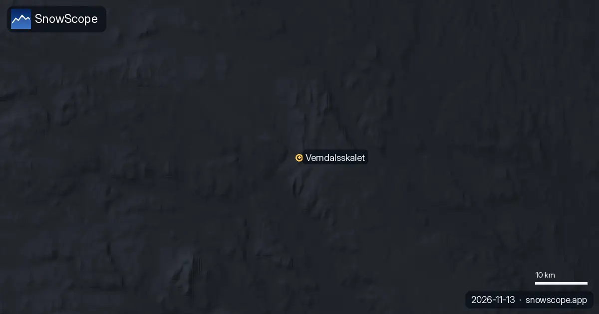

Riksgränsen: 173 cm of snow, the deepest in Scandinavia (16 November)
If you want depth, Riksgränsen (Norway / Sweden) is the place this Monday: around 173 cm up top. The runners-up are Sulitjelma Fjellandsby (130 cm) and Abisko (129 cm). The details follow, with the heights that matter.
See the live snow forecast for Riksgränsen in the SnowScope appSnow depth, powder alerts and the 3D map, free.
What fell since Tuesday's lifts
In the last 72 hours, Sulitjelma Fjellandsby got the most new snow: about 10 cm. Tromsø Alpinpark (8 cm) and Narvik (5 cm) also had new snow.
Depth is what decides whether a slope can be skied at all. Early in the season, a resort with a deep base on its upper slopes keeps good snow even after a few mild days, while thin cover turns icy or bare quickly.
| Resort | Snow depth | New snow, 72 h | Coming, next days | Top |
|---|---|---|---|---|
| Riksgränsen | 173 cm | 4 cm | 5 cm | 900 m |
| Sulitjelma Fjellandsby | 130 cm | 10 cm | 3 cm | 542 m |
| Abisko | 129 cm | 3 cm | 12 cm | 902 m |
| Tromsø Alpinpark | 92 cm | 8 cm | 4 cm | – |
| Narvik | 83 cm | 5 cm | 0 cm | – |
Low, middle and high
Height matters at Riksgränsen: 88 cm at the top (900 m), 50 cm at 708 m and 22 cm down at 516 m.
Where to go
Riksgränsen, Norway / Sweden: skiing up to 900 m; a snow depth of about 173 cm near the top; 4 cm added over three days; a forecast of 5 cm by 19 November. Sulitjelma Fjellandsby, Norway: 130 cm of snow high up; 10 cm of new snow in three days; about 3 cm in the forecast to 19 November; a top station at 542 m. Abisko (Sweden): 129 cm of snow high up; 3 cm of new snow in three days; 12 cm more expected until 19 November; lifts up to 902 m. Tromsø Alpinpark, Norway: a forecast of 4 cm by 19 November; roughly 92 cm where the best runs start; 8 cm added over three days.
Measured at the stations
Bursiljum (92 m) measured 53 cm of snow on 16 November. Brände (54 m) measured 51 cm of snow on 15 November. Lyngen Gjerdvassbu (710 m) measured 44 cm of snow on 16 November, 1 cm of it new in 24 hours.
Across Scandinavia
332 of 423 resorts in Scandinavia show snow today (729,380 km² of snow cover). By 19 November the map expects 357.
The next days
Until 19 November, the forecast brings the most snow to Abisko: about 12 cm. Riksgränsen (5 cm) and Tromsø Alpinpark (4 cm) should get snow too.
Tips for skiers
- Thin early snow can hide rocks and stumps: keep to the marked slopes.
- Cold and wind make the fjell feel much colder than the number: dress in layers and cover your face.
- Many northern resorts light their main slopes in the afternoon: check the lit-slope hours before you go.
- Early in the season, the highest lifts and the shady slopes keep the best snow.
About these numbers
Resort snow depths are the deepest snow on the resort's upper slopes from the SnowScope snow model (about 1 km, run of 16 November); they are estimates for an area, not a measurement at one point. Station values are measurements on the date shown. Forecasts can change. Always read the official avalanche bulletin before going off-piste.
Cite this report
For research, teaching or the press: the numbers and charts are free to reuse under CC BY 4.0 with this citation.
SnowScope (2026), Riksgränsen: 173 cm of snow, the deepest in Scandinavia (16 November), https://snowscope.app/blog/en/2026/11/scandinavia-riksgransen-snow-depth-today-16-november-2026.html, accessed 2026-11-16
SnowScope (Atlas Labs). (2026, November 16). Riksgränsen: 173 cm of snow, the deepest in Scandinavia (16 November). SnowScope snow reports. https://snowscope.app/blog/en/2026/11/scandinavia-riksgransen-snow-depth-today-16-november-2026.html
BibTeX
@misc{snowscope2026scandinaviariksgransensn,
author = {{SnowScope (Atlas Labs)}},
title = {Riksgränsen: 173 cm of snow, the deepest in Scandinavia (16 November)},
year = {2026},
month = nov,
howpublished = {\url{https://snowscope.app/blog/en/2026/11/scandinavia-riksgransen-snow-depth-today-16-november-2026.html}},
note = {Published 2026-11-16 20:42 UTC; accessed 2026-11-16}
}· CC BY 4.0 · Methods, data and tools →
Riksgränsen: snow and temperature by height, this winter vs last (tools) →
Follow Riksgränsen
Free: a message when fresh snow is coming, and the forecast every morning.
More snow reports

Vemdalen snow conditions in mid-November 2026: Swedish weather stations around Vemdalsskalet and Björnrike measured 6 to 12 cm on 13 November after a snowy two days, about 8 cm more this week, opening plans and 46 past winters.

Trysil December skiing: 44 cm mid-mountain on a typical 15 December, 83 % of winters with 30 cm in mid-December; prices are dynamic, so book early.

Trondheim dog owners, weekend of 14 November 2026: no snow depth reported in the city, 5 to 18 cm inland. Which Bymarka roads need a lead all year, the winter-maintained trails, and a mild, wet weekend.